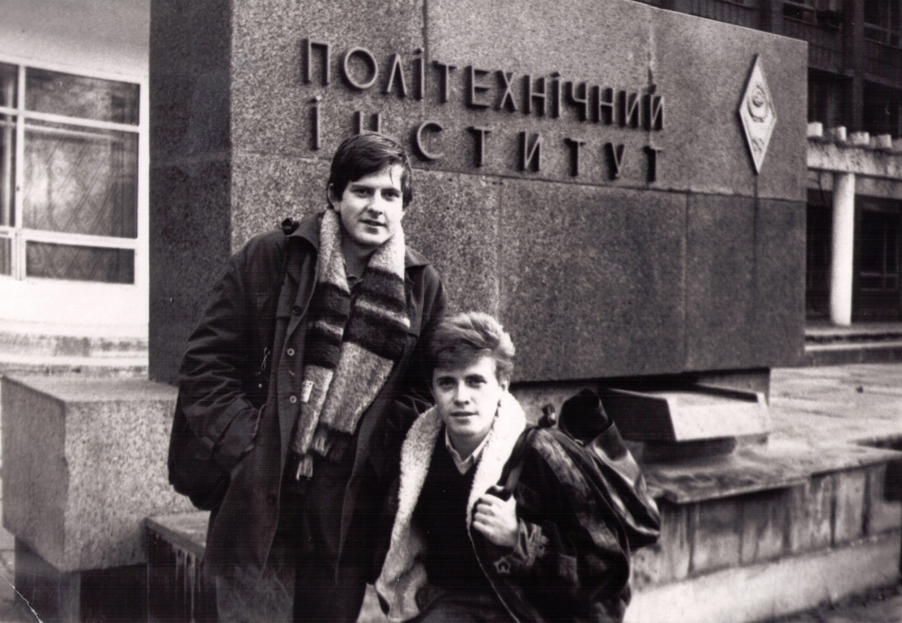
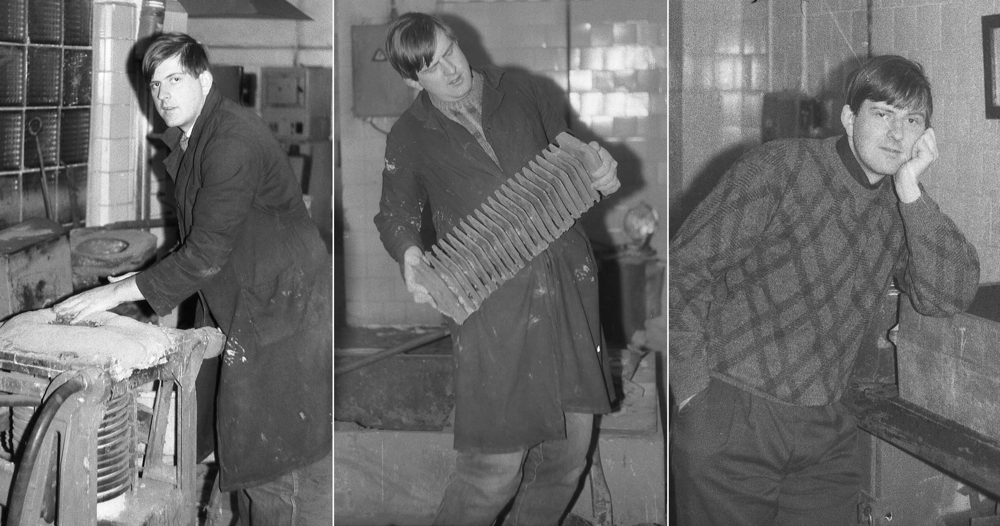
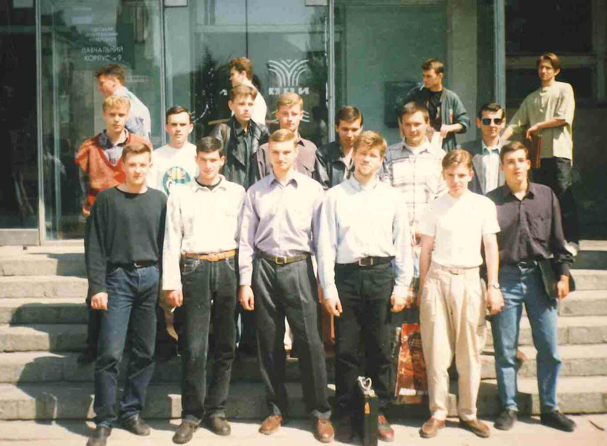
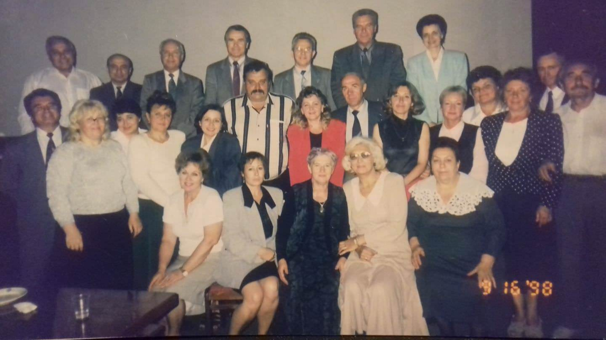

ЛЮДИ
Студенты и преподавательский состав 1988-1998 гг.Кортнев А.В. - организатор школы физиков-акустиков в ОПИ, награжден: орденом Ленина, 7 медалями, 3 нагрудными знаками, Почетной Грамотой Президиума Верховного Совета УССР.
Прокопович И.В. - выпускник МТФ ОПИ (ОНПУ) 1993, аспирант.
Прокопович И.В. - выпускник МТФ ОПИ (ОНПУ) 1993, аспирант.
Прокопович И.В. с 2016 гг. - директор ИМИ ОНПУ.
Первый выпуск магистров РТФ ОНПУ. Группа РТ-943, 1996-1997 гг.
Юбилейное заседание профссоюзнои союза преподавателей ОГПУ, сентябрь 1998 Верхний ряд слева направо: Маковеев П.С. - председатель профкома, Цабиев А.Н., Морозов В.В., Маслянинов Л.В., Гугнин В.П., Яковлев А.В., Бершак С.В. Средний ряд: Мотулько Б.В., Зверяко Л.А., Бессмертная А.Н., Денисова А. Е., Балан С.А., Кравцов Е.Д., Огинская С.М., Мещерякова Л.П. , Рязанова И.А., Балабан И.М. Нижний ряд: Бабийчук О.Б., Играевська Л.В., Дубовик Н.А., Следзюк Н.А.